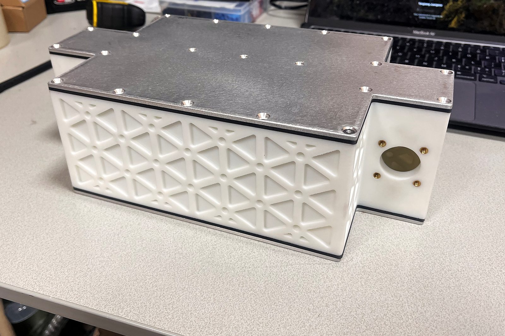
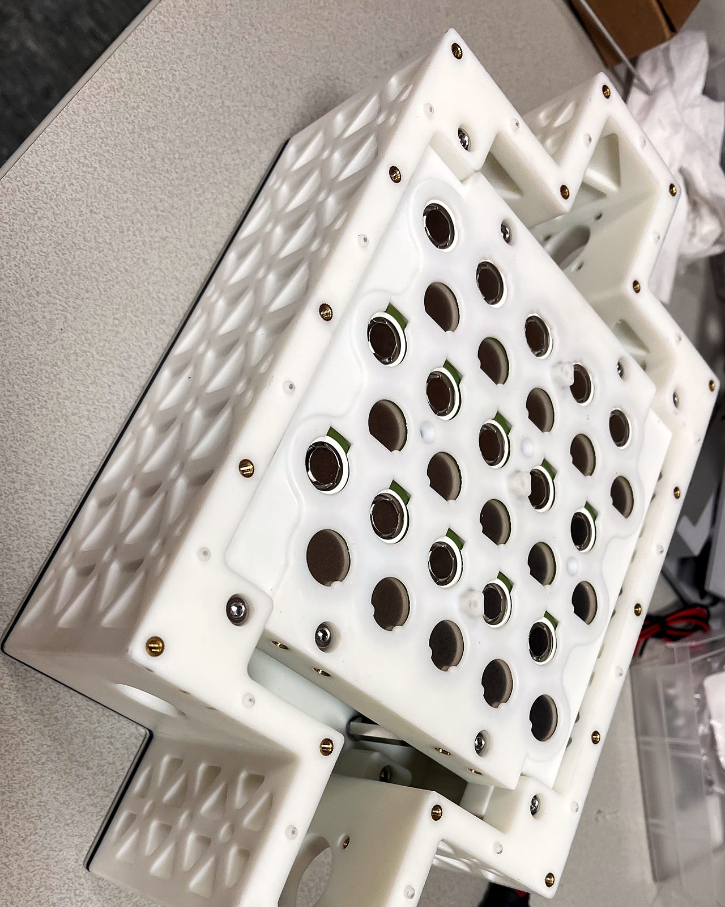
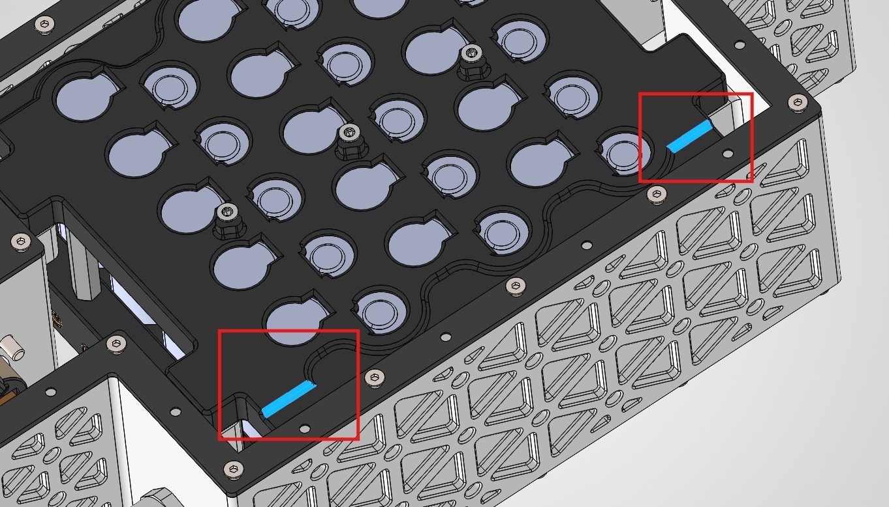

Battery modules for an electric Cessna 150.
The aircraft’s original battery module needed a rethink. Over the summer, working full-time, I redesigned it from the ground up in SolidWorks — to my supervisor’s requirements, and improving it every time a detail didn’t work.



- Scope
- Full redesign of the aircraft’s battery module
- Test article
- Mini module — manufactured, going into testing
- Aircraft modules
- One in the front, two in the wings — redesigned and manufactured
- Tool
- SolidWorks
- Time
- Full-time over summer 2026; part-time alongside my studies since
Small first
A mini test module came first. It has been manufactured and is going into testing.
Then full size
The modules that go on the aircraft — one up front, two in the wings — are redesigned and now manufactured.
How the work runs
My supervisor sets the requirements, I turn them into a design, and when something doesn’t work I go back and improve it.